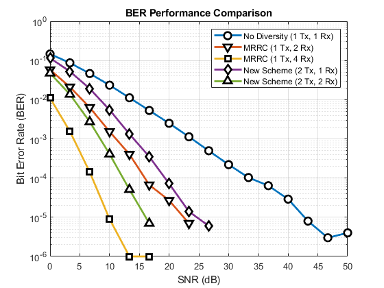

Alamouti Algorithm Implementation
Alon S. Levin ECE-408 Wireless Communications Spring 2020
Contents
Prepare Environment
clear, clc, close all % Clear all current variables and outputs format compact % Prepare command line output profile on % Allow for timing information
Prepare to Gather Simulation Results
numSNR = 16; % Number of SNR points we want to test SNR = linspace(0, 50, numSNR); % SNR we want to test BER = nan(5, numSNR); % Empty BER matrix, to be filled numBits = 1e4; % Number of data bits to transmit numIter = 100; % Number of iterations of algorithms f_m = 1; % Maximum Doppler frequency shift
Begin Simulation
No Diversity
numRx = 1
fprintf('Begin:\tNo diversity\n') tic BER(1, :) = estimateBER_MRRC(1, numBits, SNR, numIter, f_m); fprintf('End:\tNo diversity\n') toc
Begin: No diversity End: No diversity Elapsed time is 3.434695 seconds.
MRRC, 2 Rx
fprintf('Begin:\tMRRC, 2 Rx\n') tic BER(2, :) = estimateBER_MRRC(2, numBits, SNR, numIter, f_m); fprintf('End:\tMRRC, 2 Rx\n') toc
Begin: MRRC, 2 Rx End: MRRC, 2 Rx Elapsed time is 5.492659 seconds.
MRRC, 4 Rx
fprintf('Begin:\tMRRC, 4 Rx\n') tic BER(3, :) = estimateBER_MRRC(4, numBits, SNR, numIter, f_m); fprintf('End:\tMRRC, 4 Rx\n') toc
Begin: MRRC, 4 Rx End: MRRC, 4 Rx Elapsed time is 10.851407 seconds.
Alamouti, 1 Rx
fprintf('Begin:\tAlamouti, 1 Rx\n') tic BER(4, :) = estimateBER_Alamouti(1, numBits, SNR, numIter, f_m); fprintf('End:\tAlamouti, 1 Rx\n') toc
Begin: Alamouti, 1 Rx End: Alamouti, 1 Rx Elapsed time is 4.330688 seconds.
Alamouti, 2 Rx
fprintf('Begin:\tAlamouti, 2 Rx\n') tic BER(5, :) = estimateBER_Alamouti(2, numBits, SNR, numIter, f_m); fprintf('End:\tAlamouti, 2 Rx\n') toc
Begin: Alamouti, 2 Rx End: Alamouti, 2 Rx Elapsed time is 7.737751 seconds.
Plot the Result
figure('Name', 'BER Performance Comparison') semilogy(SNR, BER(1,:), '-o', 'LineWidth', 2, 'MarkerFaceColor', 'auto', 'MarkerEdgeColor', 'k', 'MarkerSize', 8) hold on semilogy(SNR, BER(2,:), '-v', 'LineWidth', 2, 'MarkerFaceColor', 'auto', 'MarkerEdgeColor', 'k', 'MarkerSize', 8) semilogy(SNR, BER(3,:), '-s', 'LineWidth', 2, 'MarkerFaceColor', 'auto', 'MarkerEdgeColor', 'k', 'MarkerSize', 8) semilogy(SNR, BER(4,:), '-d', 'LineWidth', 2, 'MarkerFaceColor', 'auto', 'MarkerEdgeColor', 'k', 'MarkerSize', 8) semilogy(SNR, BER(5,:), '-^', 'LineWidth', 2, 'MarkerFaceColor', 'auto', 'MarkerEdgeColor', 'k', 'MarkerSize', 8) title('BER Performance Comparison') xlabel('SNR (dB)') ylabel('Bit Error Rate (BER)') xlim([0, 50]) ylim([1e-6, 1e0]) grid on legend('No Diversity (1 Tx, 1 Rx)', 'MRRC (1 Tx, 2 Rx)', 'MRRC (1 Tx, 4 Rx)', 'New Scheme (2 Tx, 1 Rx)', 'New Scheme (2 Tx, 2 Rx)')